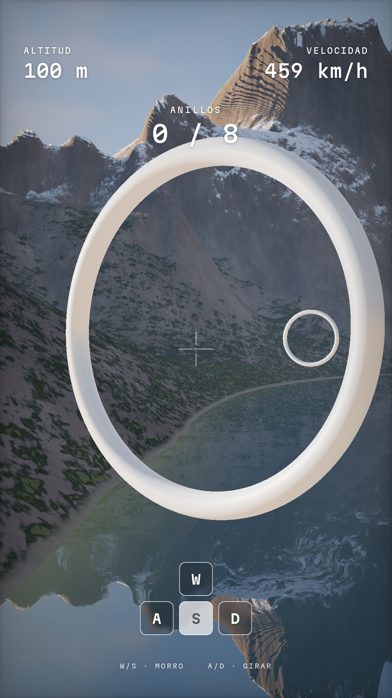
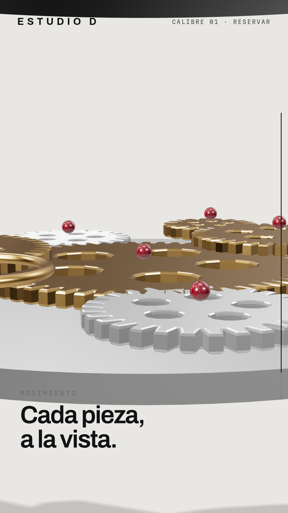
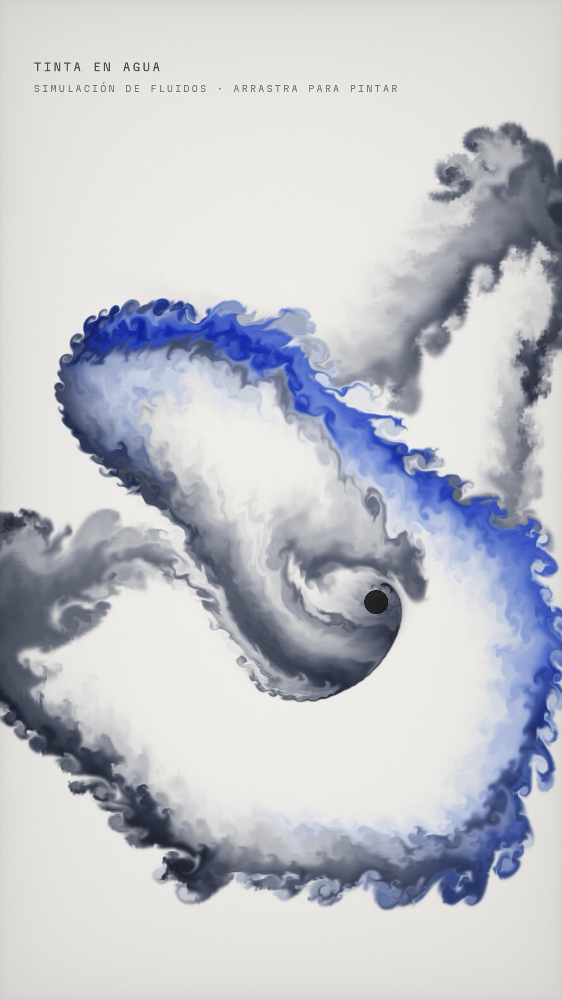
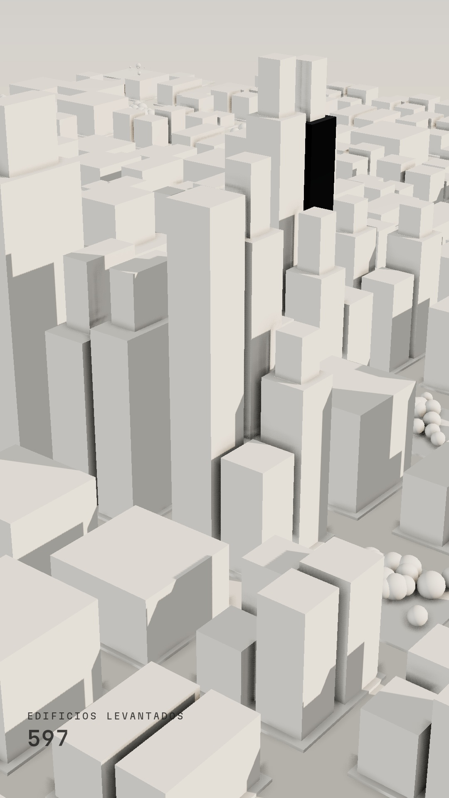
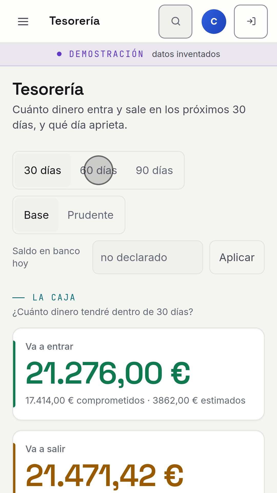

La instrucción de partida que le dimos a la IA (Claude) y lo que construyó a partir de ella. Todo es código que funciona en el navegador.
Ninguna salió a la primera: después vinieron muchas rondas de revisión (cámara, luz, ritmo, detalles) dirigidas por nuestro equipo.




